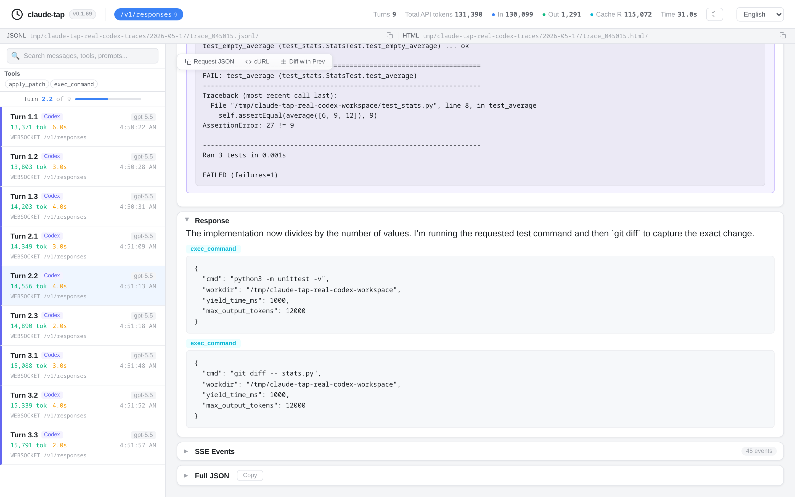

claude-tap is a local trace viewer and HTML exporter for AI coding agents. It helps you
inspect prompts, tool calls, token usage, latency, streaming responses, request diffs, and raw API
request shapes without sending private runs to a hosted dashboard.

What is an AI agent trace?
An AI agent trace is the recorded request and response flow behind an agent run. For coding agents, a useful trace usually includes:
- System prompts and conversation history
- Tool schemas, tool calls, tool inputs, and tool results
- Streaming response chunks reconstructed into readable output
- Token usage, cache usage, and latency
- Request diffs between adjacent turns
The terminal shows what the agent says. A trace shows what the agent actually sent.
Why view traces locally?
Many observability products are useful for production systems, but local debugging has a different job. When a coding agent touches private code, private prompts, repository metadata, or internal tools, the safest default is to inspect the trace on your own machine.
claude-tap keeps trace sessions local by default. Common auth headers are redacted before recording, and exported HTML files are static artifacts that you control.
Supported traces and clients
claude-tap can trace and inspect sessions from:
- Claude Code
- Codex CLI
- Gemini CLI
- Cursor CLI
- OpenCode
- Kimi CLI
- Pi
- Hermes Agent
- Qoder CLI
- Antigravity CLI
- CodeBuddy CLI
It also supports trace shapes from Anthropic Messages, OpenAI Responses, OpenAI Chat Completions, Gemini, and Claude-compatible gateways.
How to view a trace
Install claude-tap:
uv tool install claude-tapRun the client through claude-tap:
# Claude Code
claude-tap
# Codex CLI
claude-tap --tap-client codex
# Gemini CLI
claude-tap --tap-client gemini -- -p "hello"Open the local dashboard or export a standalone HTML file:
claude-tap export --format html trace.jsonlWhat to inspect first
- Did the agent receive the prompt and context you expected?
- Did tool schemas change between turns?
- Did the agent call the right tool with the right parameters?
- Did token usage grow because of history, tool results, or repeated context?
- Did latency come from the model call, tool call, or a long streaming response?
Claude trace viewer
For Claude Code and Anthropic-compatible traffic, claude-tap shows Anthropic Messages requests, tool calls, streaming responses, token usage, and Claude-compatible gateway metadata.
Codex trace viewer
For Codex CLI, claude-tap supports OpenAI API key mode and ChatGPT subscription OAuth mode. It can inspect OpenAI Responses API traffic, WebSocket records, tool calls, reasoning/output sections, token usage, and request diffs.
Export traces to HTML
The HTML export is useful when you need a portable review artifact:
- Share a debugging run with another maintainer
- Attach evidence to a pull request
- Archive a model behavior regression
- Compare adjacent requests during prompt or tool changes
Use a local trace viewer when you want fast inspection of private agent runs. Use hosted observability when you need production monitoring, team-wide dashboards, alerts, or long-term telemetry.